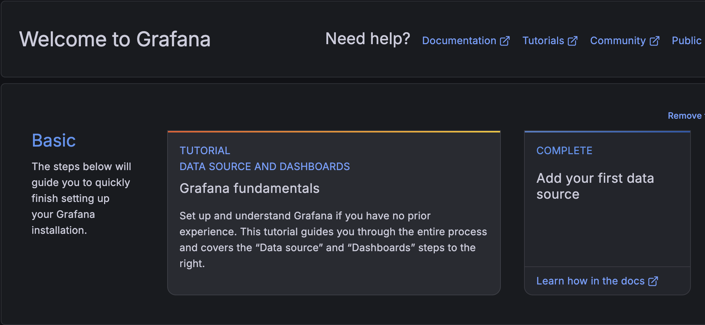

SMART MANUFACTURING PROJECT
KAMMAR SODA
Industrial Bottling Line Simulation
A complete educational production-line system demonstrating Python-based control logic, HMI monitoring, system architecture, Docker deployment, Grafana visualization, Git version control, and web-based documentation.
6
Production Stations
4
Software Layers
89.1%
Simulated Efficiency
24/7
Monitoring Concept
ABOUT THE PROJECT
Six Stations. Four Software Layers. One Smart Factory.
KAMMAR SODA simulates a modern beverage production line where bottles move through blow molding, filling, carbonation, capping, labeling, and quality control. The project combines industrial automation concepts with software engineering tools to demonstrate how smart manufacturing systems are planned, monitored, and documented.
Project Evidence

Operator HMI
Displays production counters, machine status, alarms, and station flow.

System Architecture
Shows the physical, control, data, and visualization layers.

Grafana Dashboard
Represents real-time monitoring and production data visualization.
System Architecture
Understand how the project is organized into industrial software layers.
Learn More →Question Bank
Review technical questions about Git, Docker, MES, SCADA, and Grafana.
Start Learning →